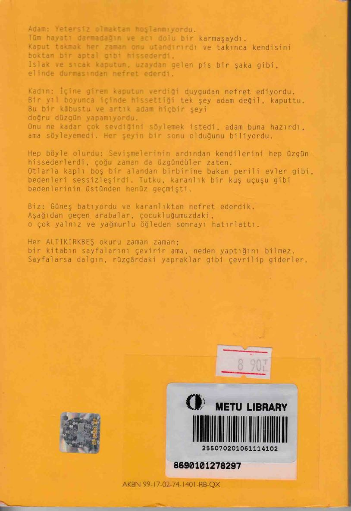

-ARKA KAPAK-
Adam: Yetersiz olmaktan hoşlanmıyordu. Tüm hayatı darmadağın ve acı dolu bir karmaşaydı. Kaput takmak her zaman onu utandırırdı ve takınca kendisini boktan bir aptal gibi hissederdi. Islak ve sıcak kaputun, uzaydan gelen pis bir şaka gibi, elinde durmasından nefret ederdi.
Kadın: İçine giren kaputun verdiği duygudan nefret ediyordu. Bir yıl boyunca içinde hissettiği tek şey adam değil, kaputtu. Bu bir kâbustu ve adam artık hiçbir şeyi doğru düzgün yapamıyordu. Onu ne kadar çok sevdiğini söylemek istedi, adam buna hazırdı, ama söyleyemedi. Her şeyin bir sonu olduğunu biliyordu.
Hep böyle olurdu: Sevişmelerinin ardından kendilerini hep üzgün hissederlerdi, çoğu zaman da üzgündüler zaten. Otlarla kaplı boş bir alandan birbirine bakan perili evler gibi, bedenleri sessizleşirdi. Tutku, karanlık bir kuş uçuşu gibi bedenlerinin üstünden henüz geçmişti.
Biz: Güneş batıyordu ve karanlıktan nefret ederdik. Aşağıdan geçen arabalar, çocukluğumuzdaki, o çok yalnız ve yağmurlu öğleden sonrayı hatırlattı.
Her ALTIKIRKBEŞ okuru zaman zaman: bir kitabın sayfalarını çevirir ama neden yaptığını bilmez. Sayfalarsa dalgın, rüzgârdaki yapraklar gibi çevrilip giderler.
